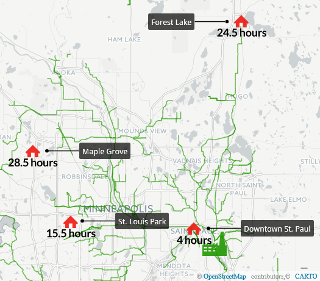

It is easy to take flushing a toilet for granted, but each push of the handle kicks off a days-long process to treat our waste.
And all that waste produces mountains of data, which tell an interesting story about life in the Twin Cities.
The majority of wastewater from the Twin Cities heads to the Metropolitan Wastewater Treatment Plant in St. Paul, the 10th largest facility of its kind in the country. On a typical day, it treats more than 180 million gallons of our wastewater before discharging it to the Mississippi River.
But it doesn't all rush in at once.
Less water enters the plant on weekends, for example, largely due to closed industrial plants and businesses. The flow also reaches its peak later in the day on weekends, which Met Council officials speculated may be due to people keeping later weekend schedules.
Flush a toilet in Maple Grove and it might take 28.5 hours to navigate through the council's interceptor pipes, compared to just four hours from downtown St. Paul. That's based on an assumed speed of two feet per second.

Before the water can get processed, a series of bars screen out any pieces of trash in the water. That includes everything from rags, condoms and feminine hygiene products to the occasional rubber ducky — or even a bowling ball (yes, that really happened).
More than 1,300 tons of trash get pulled out every year and sent to landfills. The tonnage typically spikes in the spring after rainwater enters the system and dislodges junk that accumulated during the winter months.
The treatment process typically takes about 24 hours, and relies primarily on gravity and microorganisms to purify the water. The final product is cleaner than water in the Mississippi River, its ultimate destination.
Among the plant's success stories has been curbing the discharge of phosphorus into the river. Phosphorous spurs algae growth, which reduces water oxygen levels and harms fish.
The phosphorous discharge in 2015 was just 8 percent what it was in 2000, largely due to a “Bio-P” process that uses oxygen to accelerate a natural biological treatment process.
Data Drop is a weekly feature that uses data analysis and visualizations to explain, surprise, inform and entertain readers on topics relevant to Minnesotans. Do you have an idea you'd like us to explore? Contact MaryJo Webster